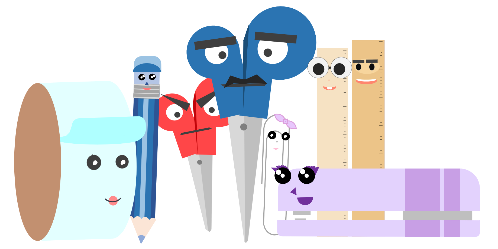

|  |
The Stationeriks show is a show where there are many cool characters studying at the school where all the events of the series take place. Each episode is a day in their lives and you get to see how they live their school life and deal with the challenges they face. In this show you will see what school everyday life is and you can even feel like a student. Watching The Stationeriks you will never get bored and will have a good time! |
|---|